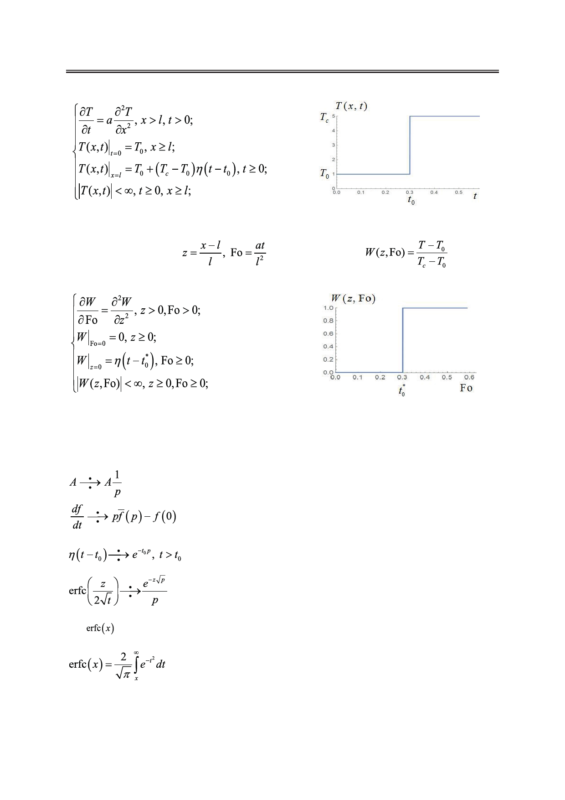

Математическое моделирование влияния релаксационных процессов на температурные
поля в упругом полупространстве
Используя замену:
задачу в безразмерном виде (рис.2):
Рис. 1. График температурной функции
(температура на границе изменяется мгновенно).
(критерий Фурье),
, получим
Рис. 2. График безразмерной температурной
функции (температура на границе изменяется мгновенно).
Для решения этой краевой задачи воспользуемся интегральным преобразованием
Лапласа. Необходимые формулы выпишем из таблиц, приведенных в [3]:
,
(1)
,
(2)
,
(3)
,
(4)
где
– дополнительная функция ошибок, которая определяется как [6]:
.
Для перевода нашей безразмерной задачи в пространство изображений по Лапласу
воспользуемся формулами (1) – (3). Операционная задача имеет следующий вид:
42
Российский технологический журнал 2017 Том 5 № 5